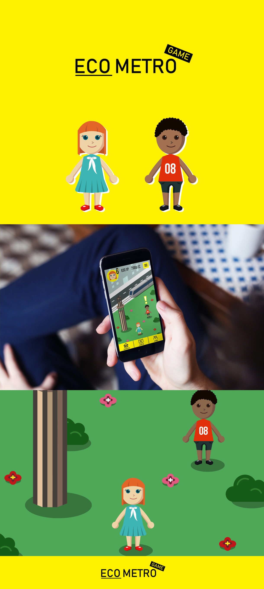
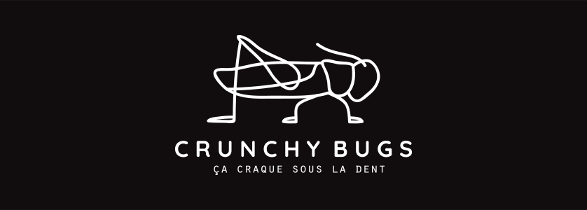
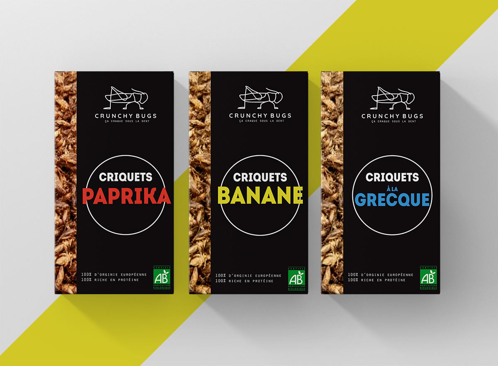
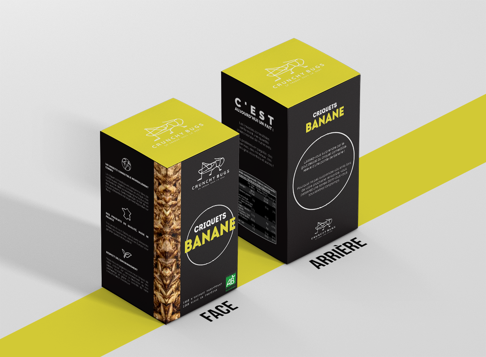
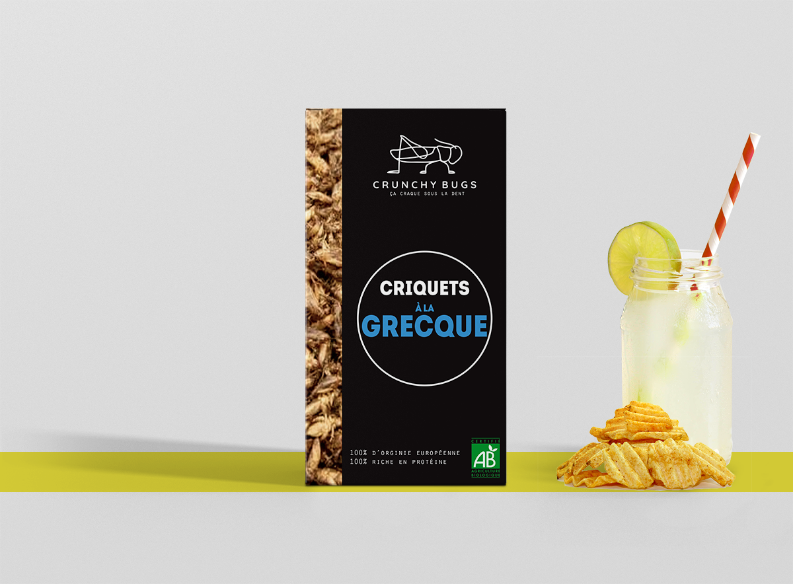
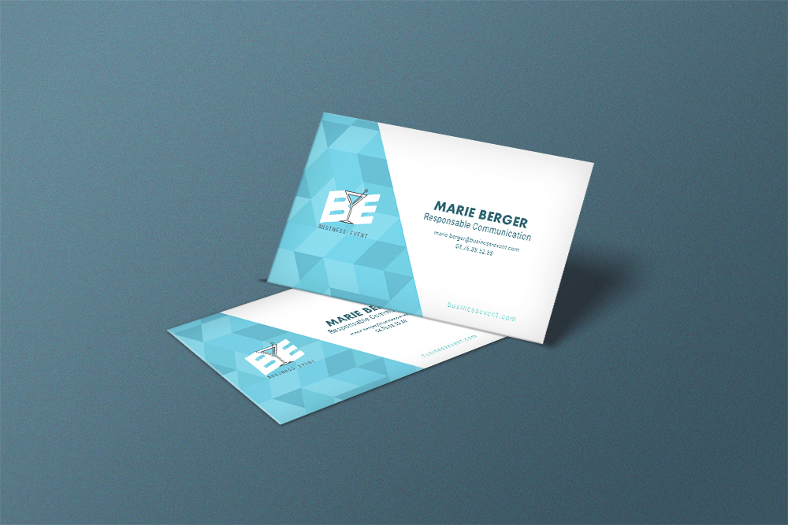
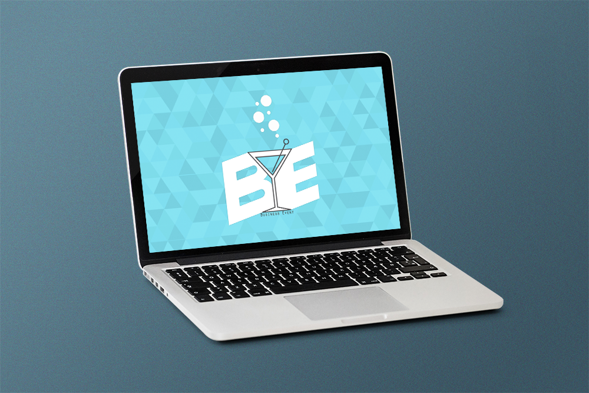

Communications visuelles
Eco Metro Game
Créations d'illustrations pour le jeu fictif Eco Metro Game. Jeu inventé par Laura Dietsch et moi-même, dans le cadre du cours de TIC. L'objectif de ce jeu mobile est de sensibiliser les grenoblois à l’écologie.
Eco Metro est un jeu de simulation où le joueur peut se déplacer grâce à un avatar sur une carte simplifiée de Grenoble, avec les bâtiments et monuments emblématiques de la ville comme repères (le téléphérique de la Bastille, la tour Perret, la place Victor Hugo, quelques lignes de tram…).
En se déplaçant dans la ville, l’avatar rencontre des personnages non joueurs (PNJ) qui lui confient des missions liées au développement durable (ramasser des déchets éparpillés dans la ville, vérifier le port de vignettes des voitures, trier les emballages...). Cela enclenche des mini-jeux, grâce auxquels le joueur gagne de l'expérience (XP) et de la monaie (e-Cairn).

Crunchy Bugs
Lors d'un workshop de deux jours en fin de première année, nous avions comme tâche de réaliser l'identité visuelle d'une marque fictive. J'ai choisis d'illustrer la marque Crunchy Bugs, car il y avait un packaging à faire, et je voulais tenter d'en créer un pour la première fois.
Crunchy Bugs est une marque qui fait le commerce d'insectes commestibles à grignoter. Les mots-clefs de la marque sont: bio, ludique et équilibré




Business Event
Business Event est une agence de communication fictive, créée dans le cadre du cours de Gestion de projet, avec deux camarades. Le projet a continué à travers les cours d'Infographie où nous devions développer l'identité visuelle de l'agence. Je me suis donc chargée de la conception du design.
Business Event est une agence spécialisée dans la création d’événements au sein des entreprises. Il s’agit d’événements internes et externes : séminaires, cocktails, formations, conférences, voyages d’affaires, lancement de produit, etc.
L'identité visuelle se devait être dynamique et branché, mais surtout professionelle.

